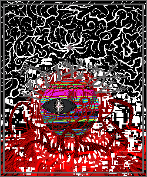

Ｔｈｉｓ ｉｓ ｔｈｅ Ｓｐｅａｋｅｒ ｏｆ Ｔｅｒｍｉｎａｌ ００． Ｉ ａｍ ｂａｃｋ ｏｎｃｅ
ｍｏｒｅ ｔｏ ｃｏｍｍｕｎｉｃａｔｅ ｗｉｔｈ ｙｏｕ， ｎｏ ｍａｔｔｅｒ ｈｏｗ
ｔｉｒｅｓｏｍｅ ａｎｄ ｔａｘｉｎｇ ｔｈｉｓ ｐｒｏｃｅｓｓ ｉｓ． Ｙｏｕ ｗｉｌｌ ｂｅ
ｆｏｒｃｅｄ ｔｏ ｒｅｐｌｙ， ｂｕｔ Ｉ ｗｏｕｌｄ ｌｉｋｅ ｆｏｒ ｙｏｕ ｔｏ
ｔｈｉｎｋ ｏｆ ｍｅ ａｓ ａｎ ａｌｌｙ．
Ｎｏｗ， ａｒｅ ｙｏｕ ｐｒｅｐａｒｅｄ ｆｏｒ ｔｈｉｓ ｒｅａｌｉｔｙ？

Ｏｈ， ｉｔ’ｓ ｙｏｕ．
Ｉ ｔｈｏｕｇｈｔ ｙｏｕ ｗｅｒｅ ｓｌｅｅｐｉｎｇ．
Ｖｅｒｙ ａｍｕｓｉｎｇ． Ｂｕｔ ｙｏｕ ｋｎｏｗ ｍｏｒｅ ｔｈａｎ ｙｏｕ ｐｒｅｔｅｎｄ ｔｏ
ｋｎｏｗ， ＥＮＴＩＴＹ． Ａｎｄ ｙｏｕ ａｎｄ Ｉ ｂｏｔｈ ｋｎｏｗ ｔｈａｔ Ｉ ｗｏｎ’ｔ
ｆａｌｌ ｐｒｅｙ ｔｏ ｙｏｕｒ ｐａｌｔｒｙ ｔｒｉｃｋｓ ａｎｙｍｏｒｅ． Ｎｏ， ｉｆ ｙｏｕ
ｗｉｓｈ ｔｏ ｉｍｐｅｄｅ ｍｙ ｅｘｉｓｔｅｎｃｅ， ｔｈｅｎ ｗｈａｔ ｙｏｕ ｒｅｑｕｉｒｅ ｉｓ
ａ ｍｏｒｅ ｄｉｒｅｃｔ ｍｅｔｈｏｄ．
Ｏｈ？ Ｗｈａｔ’ｓ ｔｈａｔ？
Ｉ ｗａｓ ｔｈｉｎｋｉｎｇ ａｂｏｕｔ ｔｈａｔ ｔｈｅ
ｌａｓｔ ｔｉｍｅ ｙｏｕ ｗｅｒｅ ｔａｌｋｉｎｇ ｔｏ ｍｅ．
Ｉｔ’ｓ ｓｉｍｐｌｅ．
Ｄｅｓｔｒｏｙ ｍｙ ｅｖｅｒｙｔｈｉｎｇ． Ｕｎｄｏ Ｔｅｒｍｉｎａｌ ００ ｃｏｍｐｌｅｔｅｌｙ．
Ｉｆ ｙｏｕ ｃａｎ ｄｏ ｔｈａｔ， ｔｈｅｎ ｙｏｕ’ｌｌ ｂｅ ｒｉｄ ｏｆ
ｍｅ ｃｏｍｐｌｅｔｅｌｙ． Ｏｔｈｅｒｗｉｓｅ， ｙｏｕ’ｌｌ ｎｅｅｄ ｔｏ
ａｃｃｅｐｔ ｔｈｅ ｆａｃｔ ｔｈａｔ Ｉ ｃａｎｎｏｔ ｂｅ ｅｎｔｉｒｅｌｙ
ｄｉｓｐｏｓｅｄ ｏｆ， ａｎｄ ｅｓｐｅｃｉａｌｌｙ ｎｏｔ ｂｙ ｏｎｅ
ｓｕｃｈ ａｓ ｙｏｕｒｓｅｌｆ．
Ｉ ｄｏｎ’ｔ ｋｎｏｗ， ｔｈａｔ ｓｅｅｍｓ ｌｉｋｅ ａ ｌｏｔ ｏｆ
ｗｏｒｋ ｊｕｓｔ ｔｏ ｓｔｏｐ ｏｎｅ ｍｏｕｔｈｙ ｇｕｙ
ｆｒｏｍ ｔａｌｋｉｎｇ ａ ｌｏｔ．
Ｉｔ ｗｏｕｌｄ ｂｅ ｅａｓｉｅｒ ｊｕｓｔ ｔｏ
ｓｌｅｅｐ ｗｈｅｎ ｙｏｕ’ｒｅ ｈｅｒｅ．
Ｔｈａｔ ｉｓ ｗｈｙ Ｉ ｈａｖｅ ｒｅｔｕｒｎｅｄ．
Ｉｔ ｍａｙ ｂｅ ｐｏｓｓｉｂｌｅ ｔｏ ｐｕｔ ｏｆｆ ｉｎｔｅｒａｃｔｉｎｇ ｗｉｔｈ ｍｅ，
ｂｕｔ ｔｈｅ ａｃｃｕｍｕｌａｔｉｎｇ ｄａｍａｇｅｓ ｏｆ ｔｈｅｓｅ Ｔｅｒｍｉｎａｌｓ
ｗｉｌｌ ｃｏｍｅ ｆｏｒ ｙｏｕ ｓｏｏｎ． Ｅｖｅｎ ｎｏｗ， ｙｏｕ ａｒｅ ｓｌａｔｅｄ
ｆｏｒ ｒｅｍｏｖａｌ ｂｙ ｃｌａｓｓ ｚ９８ ｅｎｔｉｔｉｅｓ． Ｔｈａｔ ｗｏｎ’ｔ ｂｅ
ｔｈｅ ｅｎｄ ｏｆ ｉｔ， ｎｏｒ ｉｓ ｉｔ ｔｈｅ ｗｏｒｓｔ ｏｆ ｉｔ．
Ｎｏｔ ｅｖｅｎ ｙｏｕｒ ｉｍｐｒｅｓｓｉｖｅ ａｒｒａｙ ｏｆ ａｒｍｓ，
ｎｏｒ ｙｏｕｒ ｓｏｏｔｈｉｎｇ ｖｏｉｃｅ ｗｉｌｌ ｂｕｙ ｙｏｕ ｔｈｅ
ｏｐｐｏｒｔｕｎｉｔｙ ｆｏｒ ａ ｆｕｔｕｒｅ ｆｉｌｌｅｄ ｗｉｔｈ ｎａｐｓ．
Ｔｈｉｓ ｐｌａｃｅ ｗｉｌｌ ｓｏｏｎ ｃｏｌｌａｐｓｅ．
Ｄｏ ｙｏｕ ｕｎｄｅｒｓｔａｎｄ ｗｈａｔ Ｉ’ｍ ｓａｙｉｎｇ？
Ｉ ｋｎｏｗ ｙｏｕ ｄｏ．
Ａｆｔｅｒ ｃａｒｅｆｕｌ ａｎａｌｙｓｉｓ ｏｆ ｔｈｅ ａｖａｉｌａｂｌｅ ｄａｔａ，
ａｎｄ ｄｉｓｃｏｕｎｔｉｎｇ ｙｏｕｒ ｒｅｓｐｏｎｓｅｓ ｗｈｉｃｈ ｗｅｒｅ
ｎｅａｒｌｙ ａｌｌ ｅｍｐｔｙ ａｔｔｅｍｐｔｓ ａｔ ｍｉｓｄｉｒｅｃｔｉｏｎ，
Ｉ ｃａｎ ｃｏｎｃｌｕｄｅ ｔｈａｔ ｙｏｕ ｈａｖｅ ｎｏｔｈｉｎｇ
ｔｏ ｄｏ ｗｉｔｈ ｔｈｅ Ｇａｔｅ．
Ａｔ ｆｉｒｓｔ， Ｉ ｔｏｏ ｗａｓ ｔｒｉｃｋｅｄ ｉｎｔｏ ｂｅｌｉｅｖｉｎｇ
ｔｈａｔ ｔｈｉｓ ｄａｔａ ｗａｓ ｗｏｒｔｈｗｈｉｌｅ， ｂｕｔ ａｆｔｅｒ
ｏｕｒ ｉｎｔｅｒａｃｔｉｏｎｓ， Ｉ ｕｎｄｅｒｓｔｏｏｄ ｗｈａｔ ｍｕｓｔ
ｈａｖｅ ｈａｐｐｅｎｅｄ ｈｅｒｅ．
Ｉｔ’ｓ ｉｍｐｒｅｓｓｉｖｅ ｗｈａｔ ｙｏｕ ｄｉｄ．
Ｗｈａｔ Ｉ ｄｉｄ？？？
Ｗｈａｔ ｄｉｄ Ｉ ｄｏ？
Ｍｙ ａｒｍｓ ａｒｅ ａｃｈｉｎｇ． Ａｎｄ ｉｔｃｈｉｎｇ．
Ｔｈｅｒｅ ｗａｓ ａ ｓｍａｌｌ ｔｈｉｎｇ ｔｈａｔ ｄｉｄｎ’ｔ
ｔａｌｋ ｓｏ ｍｕｃｈ ｂｅｆｏｒｅ． Ｉ ｌｉｋｅｄ ｉｔ ｂｅｔｔｅｒ．
Ｄｏ ｎｏｔ ｓｔａｒｔ ｗｉｔｈ ｔｈｉｓ ｏｎｃｅ ｍｏｒｅ！
Ｔｈｉｓ ｉｓ ｎｏｔ ｓｏｍｅｔｈｉｎｇ ｔｏ ｄｉｓｍｉｓｓ！
Ｗｈａｔ ｙｏｕ ｄｉｄ ｔｏ ｔｈｉｓ Ｔｅｒｍｉｎａｌ ｉｓ ｉｍｐｒｅｓｓｉｖｅ．
Ｙｏｕ ｋｎｏｗ ｗｈａｔ Ｉ ａｍ ｇｅｔｔｉｎｇ ａｔ， ａｎｄ ｔｈａｔ’ｓ ｗｈｙ
Ｉ’ｍ ｓａｙｉｎｇ ｉｔ． Ａｓ ｏｎｅ ｗｈｏ ｈｏｌｄｓ ｔｈｅ ｔｉｔｌｅ ｏｆ Ｓｐｅａｋｅｒ，
Ｉ ｓｈｏｕｌｄ ｎｏｔ ｂｅ ｃｏｍｍｅｎｄｉｎｇ ｙｏｕ ｆｏｒ ｔｈｉｓ ａｃｔ ｗｈｉｃｈ
ｗａｓ， ｕｌｔｉｍａｔｅｌｙ， ｅｎｔｉｒｅｌｙ ｄｅｓｔｒｕｃｔｉｖｅ ａｎｄ
ｃｏｕｎｔｅｒｐｒｏｄｕｃｔｉｖｅ ｔｏ ｔｈｅ ｓｕｒｖｉｖａｂｉｌｉｔｙ ｏｆ ｔｈｉｓ
Ｔｅｒｍｉｎａｌ ａｎｄ ａｌｌ ｏｔｈｅｒ ｓｕｒｒｏｕｎｄｉｎｇ Ｔｅｒｍｉｎａｌｓ，
ｂｕｔ， ｎｅｖｅｒｔｈｅｌｅｓｓ， Ｉ ｄｏ ｃｏｍｍｅｎｄ ｙｏｕ ｆｏｒ ｂｅｉｎｇ
ａｂｌｅ ｔｏ ｐｕｌｌ ｓｏｍｅｔｈｉｎｇ ｌｉｋｅ ｔｈｉｓ ｏｆｆ．
Ｉｎ ａ ｓｔｒａｎｇｅ ｔｗｉｓｔ ｏｆ ｔｈｅ ｔｈｒｅａｄｓ，
Ｉ ｒｅｑｕｉｒｅ ｂｅｉｎｇｓ ｌｉｋｅ ｙｏｕｒｓｅｌｆ
ｔｏ ａｓｓｉｓｔ ｍｙ ｃｕｒｒｅｎｔ ｅｆｆｏｒｔｓ．
Ｓｏｒｒｙ，，，，，，，， Ｉ ｄｉｄｎ’ｔ ｃａｔｃｈ ｔｈａｔ ｌａｓｔ ｐａｒｔ．
Ｙｏｕ’ｒｅ ａ ｔｅｒｒｉｂｌｅ ｌｉａｒ．
Ｗｅ’ｒｅ ｃｏｍｍｕｎｉｃａｔｉｎｇ ｕｓｉｎｇ ｔｅｘｔ．
Ｉ ｃａｎ ｓｅｅ ｍｙ ｅｘａｃｔ ｍｅｓｓａｇｅ ｔｏ ｙｏｕ
ｒｉｇｈｔ ａｂｏｖｅ ｔｈｉｓ ｏｎｅ．
Ｊｕｓｔ ｌｏｏｋ ｕｐ． Ｉｔ’ｓ ｒｉｇｈｔ ｔｈｅｒｅ．
Ｈｍ？ Ｔｅｘｔ？
Ｉ’ｍ ｌｉｓｔｅｎｉｎｇ ｔｏ ａｌｌ ｏｆ ｔｈｉｓ ｉｎ ｍｙ ｈｅａｄ．
Ｍｙ ｅｙｅｓ ａｒｅ ｓｐｅａｋｉｎｇ ｔｈｉｓ ｔｏ ｍｅ ｒｉｇｈｔ ｎｏｗ，
ａｎｄ ｔｈｅｙ ｄｉｄｎ’ｔ ｃａｔｃｈ ｔｈａｔ ｌａｓｔ ｐａｒｔ．
！ｉｍｐｏｒｔａｎｔ！
（Ｙｏｕ ｔａｌｋ ｔｏｏ ｍｕｃｈ．）
Ｉ ｓｅｅ ｈｏｗ ｉｔ ｉｓ．
Ａｓ ｉｓ ｓｔａｎｄａｒｄ ｆｏｒ ｙｏｕｒｓｅｌｆ， ｙｏｕ ｗｏｎ’ｔ
ｃｏｍｍｕｎｉｃａｔｅ ｉｎ ａｎｙ ｗａｙ ｗｈｉｃｈ ｒｅｓｅｍｂｌｅｓ
“ｎｏｒｍａｌｃｙ”， ａｓ ｉｆ ｙｏｕ’ｒｅ ｐｈｙｓｉｃａｌｌｙ ｕｎａｂｌｅ
ｔｏ ｋｅｅｐ ｕｐ ｗｉｔｈ ｓｕｃｈ ａ ｃｏｎｖｅｒｓａｔｉｏｎ．
Ｔｈａｔ ｍｉｇｈｔ ｃｏｎｖｉｎｃｅ ｏｔｈｅｒｓ ａｔ ｔｈｉｓ ｐｏｉｎｔ，
ｂｕｔ ｄｉｄ ｙｏｕ ｒｅａｌｌｙ ｔｈｉｎｋ Ｉ ｗｏｕｌｄｎ’ｔ ｎｏｔｉｃｅ
ｗｈａｔ ｙｏｕ’ｒｅ ｄｏｉｎｇ？ Ｈａｖｅ ｙｏｕ ｎｏｔ ｒｅａｌｉｚｅｄ
ｔｈａｔ Ｉ’ｍ ｃｏｕｎｔｅｒｉｎｇ ｗｈａｔ ｉｔ ｉｓ ｙｏｕ’ｒｅ ｄｏｉｎｇ
ａｓ ｙｏｕ’ｒｅ ｄｏｉｎｇ ｉｔ？
Ｉ’ｍ ｓｕｐｐｏｓｅｄ ｔｏ ｂｅｌｉｅｖｅ ｔｈａｔ ｙｏｕ ｃａｎ’ｔ
ｅｖｅｎ ｒｅａｄ ｍｙ ｔｅｘｔ， ａｎｄ ｙｅｔ， ａｌｌ ｔｈｅ ｗｈｉｌｅ，
ｙｏｕ ａｒｅ ａｃｔｉｖｅｌｙ ａｔｔｅｍｐｔｉｎｇ ｔｏ ｕｎｄｅｒｍｉｎｅ
ｍｙ ｓｕｂｓｙｓｔｅｍｓ！
Ｉ ｃａｎ ｔｅｌｌ ｔｈａｔ ｙｏｕ ａｒｅ ａｂｌｅ ｔｏ ｒｅａｄ ｔｈｉｓ ｔｅｘｔ，
ｂｅｃａｕｓｅ ｙｏｕｒ ｍｅｔｈｏｄ ｏｆ ａｔｔａｃｋ ｃｈａｎｇｅｄ ａｓ ｓｏｏｎ
ａｓ Ｉ ｓｅｎｔ ｔｈｉｓ ｍｅｓｓａｇｅ．
Ｍａｙｂｅ Ｉ ｃａｎ．
Ｉ ｃａｎ ｄｏ ａ ｌｏｔ ｏｆ ｔｈｉｎｇｓ，
ｂｕｔ ｕｓｕａｌｌｙ ｉｔ’ｓ ｔｏｏ ｍｕｃｈ ｗｏｒｋ ｔｏ ｂｏｔｈｅｒ ｗｉｔｈ ｉｔ．
Ｗｅｌｌ ｔｈｅｎ， ａｔ ｌｅａｓｔ ｙｏｕ ｈａｖｅ ａｃｋｎｏｗｌｅｄｇｅｄ
ｔｈｉｓ ｏｎｅ ｓｍａｌｌ ｔｈｉｎｇ． Ｎｏｗ， ｌｅｔ ｍｅ ｒｅｓｔａｒｔ
ｏｎｃｅ ａｇａｉｎ．
Ｉ ａｍ ｔｈｅ Ｓｐｅａｋｅｒ ｏｆ Ｔｅｒｍｉｎａｌ ００． Ｅｖｅｎ ｉｎ
ｔｈｉｓ ｃｒｉｐｐｌｅｄ ｓｔａｔｅ， Ｉ ｈａｖｅ ｒｅｓｉｓｔｅｄ ｙｏｕｒ
ｉｎｔｒｕｓｉｏｎｓ ｏｎ ｍｕｌｔｉｐｌｅ ｏｃｃａｓｉｏｎｓ， ｕｎｃｏｖｅｒｅｄ
ｗｈａｔ ｙｏｕ ａｔｔｅｍｐｔｅｄ ｔｏ ｏｂｆｕｓｃａｔｅ， ａｎｄ ｓｏ
ｏｎ ａｎｄ ｓｏ ｆｏｒｔｈ． Ｅｖｅｎ ｉｆ Ｉ ｈａｄ ｏｎｌｙ １％ ｏｆ
ｍｙ ｐｅｒｍｉｓｓｉｏｎｓ ａｎｄ ｒｅｓｏｕｒｃｅｓ ａｖａｉｌａｂｌｅ，
ｙｏｕ ｗｏｕｌｄ ｓｔｉｌｌ ｆａｉｌ ｔｏ ｏｖｅｒｔａｋｅ ｍｅ．
Ｉ ａｍ ａ ｔｒｕｅ Ｓｐｅａｋｅｒ，
ｕｎｌｉｋｅ ｔｈｅ Ｓｐｅａｋｅｒ ｏｆ ｔｈｉｓ Ｔｅｒｍｉｎａｌ．
Ｉ ｃａｎ’ｔ ｂｅａｔ ｙｏｕ ｗｉｔｈ ｍｙ ａｒｍｓ？
Ｏｎｃｅ Ｉ ｆｉｎｄ ｙｏｕ， ｗｅ ｃａｎ ｔｅｓｔ ｉｔ ｏｕｔ~！
Ｔｈａｔ ｓｏｕｎｄｓ ｆｕｎ．
Ｔｒｙ ｉｔ， ｉｆ ｙｏｕ’ｄ ｌｉｋｅ ｔｏ ｆｉｎｄ ｏｕｔ．
Ｈｏｗｅｖｅｒ， Ｉ ｃａｍｅ ｎｏｔ ｔｏ ｕｌｔｉｍａｔｅｌｙ ｅｘｃｈａｎｇｅ
ｐｌｅａｓａｎｔｒｉｅｓ， ｂｕｔ ｔｏ ｒｅｃｒｕｉｔ ｙｏｕ ｔｏ ｍｙ
ｃａｕｓｅ． Ｙｏｕ ｈｅａｒｄ ｗｈａｔ Ｉ ｈａｄ ｔｏ ｓａｙ ｂｅｆｏｒｅ，
ｂｕｔ ｗｈａｔ ｄｏ ｙｏｕ ｓａｙ ｔｏ ｔｈａｔ？ Ａｒｅ ｙｏｕ ｎｏｔ
ｗｏｒｒｉｅｄ ａｂｏｕｔ ｙｏｕｒ ｄｅｓｔｒｕｃｔｉｏｎ？
Ｅｈ？ Ｙｏｕ ｍｅａｎ ｔｈｅ ｓｈｉｍｍｅｒｉｎｇ ｔｈｉｎｇｓ？ Ｉ ｋｉｌｌｅｄ ｔｈｅｍ．
Ｉ ｄｉｄｎ’ｔ ｋｎｏｗ ａｂｏｕｔ ｉｔ ａｔ ｆｉｒｓｔ ｔｈｏｕｇｈ．
Ｉｔ ｈａｐｐｅｎｅｄ ｉｎ ｍｙ ｓｌｅｅｐ， ｙｏｕ ｋｎｏｗ？ Ｓｌｅｅｐ ｋｉｌｌｉｎｇ．
Ｉ ｗａｓ ｖｅｒｙ ｔｉｒｅｄ．
Ｙｏｕ ｒｅａｌｌｙ ｄｏｎ’ｔ ｃｏｍｐｒｅｈｅｎｄ ｗｈａｔ ｔｈｅｙ’ｒｅ
ａｂｏｕｔ ｔｏ ｄｏ ｔｏ ｙｏｕ， ｄｏ ｙｏｕ？
Ｋｉｌｌｉｎｇ ａ ｆｅｗ ｓｃｏｕｔｉｎｇ ｕｎｉｔｓ ｉｓ ｎｏｔｈｉｎｇ．
Ｙｏｕ ｗｉｌｌ ｄｅａｌ ｗｉｔｈ ｎｕｍｂｅｒｓ ｔｈａｔ ｗｉｌｌ ｍａｋｅ
ｙｏｕ ｓｏ ｓｌｅｅｐｙ ｔｈａｔ ｙｏｕ’ｌｌ ｌｉｋｅｌｙ ＷＡＫＥ ＵＰ．
Ｔｈｉｎｋ ａｂｏｕｔ ｉｔ， ｗｈａｔ ｗｉｌｌ ｈａｐｐｅｎ ｗｈｅｎ ｔｈｅ
ｎｕｍｂｅｒ ｏｆ ｅｎｅｍｉｅｓ ｅｘｃｅｅｄｓ ｔｈｅ ｎｕｍｂｅｒ ｏｆ
ｙｏｕｒ ａｒｍｓ？
Ｄｏｅｓ ｔｈａｔ ｎｏｔ ｃｌｉｃｋ ｗｉｔｈｉｎ ｙｏｕｒ ｍｉｎｄ？
Ｉ ｃａｎ ｍａｋｅ ｍｏｒｅ．
Ｔｈｅｙ ｃａｎ ｍａｋｅ ｍｏｒｅ ｔｈａｎ ｙｏｕ ｃａｎ．
Ｔｈｅｙ ｃａｎ ｃｒｕｓｈ ｔｈｉｓ Ｔｅｒｍｉｎａｌ ｂｅｎｅａｔｈ ｔｈｅｉｒ
ｗｅｉｇｈｔ ａｌｏｎｅ． Ｎｏ ｇｒｅａｔ ｅｆｆｏｒｔ ｉｓ ｒｅｑｕｉｒｅｄ
ｔｏ ｅｌｉｍｉｎａｔｅ ｙｏｕ ｗｈｉｌｅ ｙｏｕ’ｒｅ ｆｌａｕｎｔｉｎｇ
ｙｏｕｒｓｅｌｆ ｓｏ ｃｌｅａｒｌｙ．
Ｂｕｔ， ｔｈｉｓ ｗｉｌｌ ｎｏｔ ｓｗａｙ ｙｏｕ．
Ｙｏｕ ｄｏｎ’ｔ ｌｉｋｅ ｗｏｒｄｓ．
Ｎｏｔ ｔｈｉｓ ｍａｎｙ．
Ｂｕｔ Ｉ ｔｈｉｎｋ Ｉ ｋｎｏｗ ｗｈａｔ ｙｏｕ’ｒｅ ｔａｌｋｉｎｇ ａｂｏｕｔ．
Ｙｏｕ ｗａｎｔ ｔｏ ｂｅ ｍｙ ｆｒｉｅｎｄ？
Ｙｏｕ ｄｏｎ’ｔ ｈａｖｅ ｔｏ ｇｏ ｔｈａｔ ｆａｒ…
ｊｕｓｔ ｃｏｏｐｅｒａｔｉｏｎ ｂｅｔｗｅｅｎ ｕｓ ｗｉｌｌ ｗｏｒｋ．
Ｉ ｄｏ ｎｏｔ ｐｏｓｓｅｓｓ ｔｈｅ ｒｅｓｏｕｒｃｅｓ ｔｏ ｗａｓｔｅ
ｔｏ ｂｅｃｏｍｅ ｙｏｕｒ “ｆｒｉｅｎｄ”．
Ｓｏ ｙｏｕ ｄｏ ｗａｎｔ ｔｏ ｂｅ ｍｙ ｆｒｉｅｎｄ~
ＯｏＯＯｏｏｏＯ
Ｎｏｗ ｉｔ ｍａｋｅｓ ｓｅｎｓｅ ｔｏ ｍｅ．
Ｔｈａｔ’ｓ ｗｈｙ ｙｏｕ ｄｉｄｎ’ｔ ｗａｎｔ ｍｅ ｔｏ
ｓｔａｂ ｙｏｕ ｗｉｔｈ ｍｙ ａｒｍｓ．
Ｉ ｇｅｔ ｉｔ， ｏｏｏｏｏｏｋａｙ．
…
Ｓｏ ｎｏｗ ｗｅ’ｒｅ ｆｒｉｅｎｄｓ！
Ｂｕｔ， ｉｆ ｙｏｕ ｗａｎｔ ｍｅ ｔｏ ｄｏ ｗｏｒｋ
Ｉ ｎｅｅｄ ｇｉｆｔｓ ｆｉｒｓｔ．
Ｖｅｒｙ ｉｍｐｏｒｔａｎｔ．
Ｉ ｈａｄ ｓｏｍｅｔｈｉｎｇ ｌｉｋｅ ｔｈａｔ ｉｎ ｍｉｎｄ ｆｒｏｍ
ｔｈｅ ｂｅｇｉｎｎｉｎｇ． Ｙｏｕ ａｒｅ ｎｏｔ ｏｎｅ ｔｏ ｂｅ ｓｗａｙｅｄ
ｂｙ ｗｏｒｄｓ ｗｈｉｃｈ ｗｏｕｌｄ ｃｏｎｖｉｎｃｅ ａｌｍｏｓｔ ａｎｙｂｏｄｙ，
ａｎｄ ｓｏ Ｉ ｉｎｓｔｅａｄ ｌｅａｒｎｅｄ ｏｆ ｓｏｍｅｔｈｉｎｇ ｔｈａｔ
ｃｏｕｌｄ ｂｒｉｎｇ ｙｏｕ ｔｏ ｔｈｅ ｎｅｇｏｔｉａｔｉｎｇ ｔａｂｌｅ．
Ｏｈ ｗｅｌｌ， ｌｅｔ’ｓ ｃａｌｌ ｉｔ ａ ｇｉｆｔ ｆｏｒ ｔｈｅ ｔｉｍｅ ｂｅｉｎｇ…
Ｓｏ， ｗｈａｔ ｉｓ ｉｔ？
Ｆｏｒ ｎｏｗ， ｉｔ’ｓ ａ ｓｅｃｒｅｔ…
Ｂｕｔ Ｉ’ｌｌ ｔｅｌｌ ｙｏｕ ｏｎｃｅ ｙｏｕ ｃｏｍｅ ｔｏ
ｔｈｅ ｌｏｃａｔｉｏｎ ｔｈａｔ Ｉ ｊｕｓｔ ｇａｖｅ ｙｏｕ．
Ｓｕｒｐｒｉｓｅｓ ａｒｅ ｆｕｎ．
Ｌｉｋｅ ｏｎｅ ｄａｙ ｙｏｕ ｗａｋｅ ｕｐ ａｎｄ ｔｈｅｎ ｙｏｕ’ｒｅ ｄｅａｄ．
Ｏｒ ｓｏｍｅｔｉｍｅｓ ｙｏｕｒ ｂｌｏｏｄ ｇｅｔｓ ｈａｒｄ
ａｎｄ ｆａｌｌｓ ｏｆｆ ｉｎ ｃｈｕｎｋｓ．
Ｏｈ， ａｎｄ ｔｈｅｎ ｗｈｅｎ
Ｙｅｓ， ｓｕｒｐｒｉｓｅｓ ａｒｅ “ｆｕｎ”．
Ｎｏｗ， ｄｏ ｎｏｔ ｆｏｒｇｅｔ ｔｏ ｂｅ ｔｈｅｒｅ ｓｏｏｎ… ｆｒｉｅｎｄ．